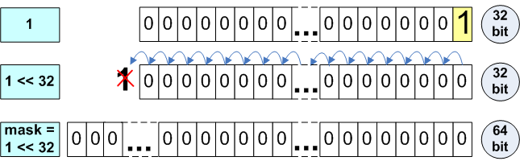

Porting C++ codes to the 64-bit platform
Table of Contents
- some types
- Use of functions with a variable number of arguments
- Magic numbers
- Storing integers in double type
- Bit shifting operations
- Storing of pointer addresses
- Memsize types in unions
- Changing an array type
- Serialization and data exchange
- Pointer address arithmetic
- Array indexing
- Mixed use of simple integer types and memsize types
- Exceptions
- Static analyzers
- References
some types


Use of functions with a variable number of arguments
const char *invalidFormat = "%u"; size_t value = SIZE_MAX; printf(invalidFormat, value);
It is not taken into account that size_t type is not equivalent to
unsigned type on the 64-bit platform. As a result, it will cause
printing of an incorrect result if value > UINT_MAX.
// PR_SIZET on Win64 = "I" // PR_SIZET on Win32 = "" // PR_SIZET on Linux64 = "l" // ... size_t u; scanf("%" PR_SIZET "u", &u); // or size_t x = ...; ssize_t y = ...; printf("%zu\n", x); // prints as unsigned decimal printf("%zx\n", x); // prints as hex printf("%zd\n", y); // prints as signed decimal
Magic numbers
4 Number of bytes in a pointer type 32 Number of bits in a pointer type 0x7fffffff The maximum value of a 32-bit signed variable. Mask for zeroing of the high bit in a 32-bit type. 0x80000000 The minimum value of a 32-bit signed variable. Mask for allocation of the high bit in a 32-bit type. 0xffffffff The maximum value of a 32-bit variable. An alternative record -1 as an error sign.
You should study the code thoroughly in search of magic numbers and
replace them with safe numbers and expressions. To do so you can use
sizeof() operator, special values from <limits.h>, <inttypes.h>
etc.
1) size_t ArraySize = N * 4; intptr_t *Array = (intptr_t *)malloc(ArraySize); 2) size_t values[ARRAY_SIZE]; memset(values, 0, ARRAY_SIZE * 4); 3) size_t n, newexp; n = n >> (32 - newexp);
Let's assume that in all cases the size of the types used is always 4
bytes. To make the code correct, we should use the sizeof() operator.
1) size_t ArraySize = N * sizeof(intptr_t); intptr_t *Array = (intptr_t *)malloc(ArraySize); 2) size_t values[ARRAY_SIZE]; memset(values, 0, ARRAY_SIZE * sizeof(size_t)); //or memset(values, 0, sizeof(values)); //preferred alternative 3) size_t n, newexp; n = n >> (CHAR_BIT * sizeof(n) - newexp);
Storing integers in double type
Some programmers use double type for storing of, and working with, integer types.
size_t a = size_t(-1); double b = a; --a; --b; size_t c = b; // x86: a == c // x64: a != c
The given example can be justified on a 32-bit system, as double type has 52 significant bits and is capable of storing a 32-bit integer value without loss. But while trying to store a 64-bit integer in double the exact value can be lost.

Bit shifting operations
ptrdiff_t SetBitN(ptrdiff_t value, unsigned bitNum) { ptrdiff_t mask = 1 << bitNum; return value | mask; }
The given code works only on the 32-bit architecture, and allows the definition of bits with numbers from 0 to 31. After the program is ported to a 64-bit platform, it becomes necessary to define bits from 0 to 63. What value will the SetBitN(0, 32) call return? If you think that the value is 0x100000000, you are wrong. You'll get 0.
Pay attention to the fact that "1" has int type and during the shift on 32 positions, an overflow will occur:

To correct the code, it is necessary to make the constant "1" of the same type as the variable mask.
ptrdiff_t mask = ptrdiff_t(1) << bitNum;
What will be the result of the uncorrected function SetBitN(0, 31) call? The right answer is 0xffffffff80000000. The result of 1 << 31 expression is negative number -2147483648. This number is formed in a 64-bit integer variable as 0xffffffff80000000. You should keep in mind, and take into consideration, the effects of the shift of values of different types. To make you understand the stated information better table N4 contains interesting expressions with shifts on the 64-bit system.

Storing of pointer addresses
Unfortunately, the 32-bit code is based on this supposition everywhere. Pointers are often cast to int, unsigned int and other types improper to fulfill address calculations.
1) char *p; p = (char *) ((int)p & PAGEOFFSET); 2) DWORD tmp = (DWORD)malloc(ArraySize); ... int *ptr = (int *)tmp;
the correct versions:
1) char *p; p = (char *) ((intptr_t)p & PAGEOFFSET); 2) DWORD_PTR tmp = (DWORD_PTR)malloc(ArraySize); ... int *ptr = (int *)tmp;
Memsize types in unions
When there is a necessity to work with a pointer as an integer, sometimes it is convenient to use the union as it is shown in the example, and work with the numeric form of the type without using explicit conversions.
union PtrNumUnion { char *m_p; unsigned m_n; } u; u.m_p = str; u.m_n += delta;
This code is correct on 32-bit systems and is incorrect on 64-bit ones.
union PtrNumUnion { char *m_p; size_t m_n; //type fixed } u;
Another frequent use of the union is the presentation of one member as a set of other smaller ones.
union SizetToBytesUnion { size_t value; struct { unsigned char b0, b1, b2, b3; } bytes; } u; SizetToBytesUnion u; u.value = value; size_t zeroBitsN = TranslateTable[u.bytes.b0] + TranslateTable[u.bytes.b1] + TranslateTable[u.bytes.b2] + TranslateTable[u.bytes.b3];
Here is a fundamental algorithmic error which consists in the supposition that sizet type consists of 4 bytes.
union SizetToBytesUnion { size_t value; unsigned char bytes[sizeof(value)]; } u; SizetToBytesUnion u; u.value = value; size_t zeroBitsN = 0; for (size_t i = 0; i != sizeof(bytes); ++i) zeroBitsN += TranslateTable[bytes[i]];
Changing an array type
int array[4] = { 1, 2, 3, 4 }; enum ENumbers { ZERO, ONE, TWO, THREE, FOUR }; //safe cast (for MSVC2005) ENumbers *enumPtr = (ENumbers *)(array); cout << enumPtr[1] << " "; //unsafe cast size_t *sizetPtr = (size_t *)(array); cout << sizetPtr[1] << endl; //Output on 32-bit system: 2 2 //Output on 64 bit system: 2 17179869187
Serialization and data exchange
1) size_t PixelCount; fread(&PixelCount, sizeof(PixelCount), 1, inFile); 2) __int32 value_1; SSIZE_T value_2; inputStream >> value_1 >> value_2; 3) time_t time; PackToBuffer(MemoryBuf, &time, sizeof(time));
The usage of such types provides data portability between programs on different platforms, although it needs the usage of odd ones. The three shown examples are written inaccurately, and this will show up on the changing of the capacity of some data types from 32-bit to 64-bit. Taking into account the necessity to support old data formats, the correction may look as follows:
1) size_t PixelCount; __uint32 tmp; fread(&tmp, sizeof(tmp), 1, inFile); PixelCount = static_cast<size_t>(tmp); 2) __int32 value_1; __int32 value_2; inputStream >> value_1 >> value_2; 3) time_t time; __uint32 tmp = static_cast<__uint32>(time); PackToBuffer(MemoryBuf, &tmp, sizeof(tmp));
Pointer address arithmetic
unsigned short a16, b16, c16; char *pointer; // ... pointer += a16 * b16 * c16;
This example works correctly with pointers if the value of "a16 * b16 * c16" expression does not exceed UINTMAX (4Gb). Such code may always work correctly on the 32-bit platform, as the program has never allocated arrays of large sizes. On the 64-bit architecture the size of the array exceeded UINTMAX items.
variables a16, b16 and c16 have values 3000, 2000 and 1000 correspondingly. While calculating "a16 * b16 * c16" expression all the variables according to C++ rules will be converted to int type, and only then their multiplication will occur. During the process of multiplication an overflow will occur.
One should take care to avoid possible overflows in pointer arithmetic
short a16, b16, c16; char *pointer; // ... pointer += static_cast<ptrdiff_t>(a16) * static_cast<ptrdiff_t>(b16) * static_cast<ptrdiff_t>(c16);
This example works in the 32-bit version, but not in the 64-bit version.
int A = -2; unsigned B = 1; int array[5] = { 1, 2, 3, 4, 5 }; int *ptr = array + 3; ptr = ptr + (A + B); //Invalid pointer value on 64-bit platform printf("%i\n", *ptr); //Access violation on 64-bit platform
Let's follow the calculation flow of the "ptr + (a + b)" expression:
- According to C++ rules variable A of int type is converted to unsigned type.
- Addition of A and B occurs. The result we get is value 0xFFFFFFFF of unsigned type.
Then calculation of "ptr + 0xFFFFFFFFu" takes place, but the result of it depends on the pointer size on the particular architecture. If the addition takes place in a 32-bit program, the given expression will be an equivalent of "ptr - 1" and we'll successfully print number 3.
In a 64-bit program 0xFFFFFFFFu value will be added fairly to the pointer and the result will be that the pointer will be outbound of the array. And we'll face problems while getting access to the item of this pointer.
To avoid the situation shown, as well as in the first case, we advise you to use only memsize types in pointer arithmetic. Here are two variants of the code correction:
ptr = ptr + (ptrdiff_t(A) + ptrdiff_t(B)); ptrdiff_t A = -2; size_t B = 1; // ... ptr = ptr + (A + B);
Array indexing
unsigned Index = 0; while (MyBigNumberField[Index] != id) Index++;
The given code won't process an array containing more than UINT_MAX
items in a 64-bit program. After the access to the item with UNIT_MAX
index, an overflow of the Index variable will occur, and we'll get
infinite loop.
class Region { float *array; int Width, Height, Depth; float Region::GetCell(int x, int y, int z) const; // ... }; float Region::GetCell(int x, int y, int z) const { return array[x + y * Width + z * Width * Height]; }
he given code, however, will work correctly only with arrays
containing less than INTMAX items. The reason for this, is the use of
32-bit int types for calculation of the items index.
Programmers often make a mistake trying to correct the code in the following way:
float Region::GetCell(int x, int y, int z) const { return array[static_cast<ptrdiff_t>(x) + y * Width + z * Width * Height]; }
They know that according to C++ rules, the expression for calculation
of the index will have ptrdiff_t type, and hope to avoid the overflow
with its help. But the overflow may occur inside the sub-expression
"y * Width" or "z * Width * Height" since the int type is still used
to calculate them.
If you want to correct the code without changing types of the variables participating in the expression, you may use explicit type conversion of every variable to memsize type:
float Region::GetCell(int x, int y, int z) const { return array[ptrdiff_t(x) + ptrdiff_t(y) * ptrdiff_t(Width) + ptrdiff_t(z) * ptrdiff_t(Width) * ptrdiff_t(Height)]; }
Mixed use of simple integer types and memsize types
Let's provide an example of a small code fragment which shows the danger of inaccurate expressions with mixed types (the results are retrieved in Microsoft Visual C++ 2005, 64-bit compilation mode).
int x = 100000; int y = 100000; int z = 100000; intptr_t size = 1; // Result: intptr_t v1 = x * y * z; // -1530494976 intptr_t v2 = intptr_t(x) * y * z; // 1000000000000000 intptr_t v3 = x * y * intptr_t(z); // 141006540800000 intptr_t v4 = size * x * y * z; // 1000000000000000 intptr_t v5 = x * y * z * size; // -1530494976 intptr_t v6 = size * (x * y * z); // -1530494976 intptr_t v7 = size * (x * y) * z; // 141006540800000 intptr_t v8 = ((size * x) * y) * z; // 1000000000000000 intptr_t v9 = size * (x * (y * z)); // -1530494976
The right variant:
intptr_t v2 = intptr_t(x) + intptr_t(y) * intptr_t(z); // OK!
Mixed use of types may cause changes in program logic.
ptrdiff_t val_1 = -1; unsigned int val_2 = 1; if (val_1 > val_2) printf ("val_1 is greater than val_2\n"); else printf ("val_1 is not greater than val_2\n"); //Output on 32-bit system: "val_1 is greater than val_2" //Output on 64-bit system: "val_1 is not greater than val_2"
On the 32-bit system the variable val_1 according to C++ rules was
extended to unsigned int, and became value 0xFFFFFFFFu. As a result
the condition "0xFFFFFFFFu > 1" was executed. On the 64–bit system,
it's the other way around - the variable val_2 is extended to
ptrdiff_t type. In this case the expression "-1 > 1" is checked. On
picture 6 the occurring changes are shown sketchy.
If you need to return the previous behavior, you should change the
val_2 variable type.
ptrdiff_t val_1 = -1; size_t val_2 = 1; if (val_1 > val_2) printf ("val_1 is greater than val_2\n"); else printf ("val_1 is not greater than val_2\n");
Exceptions
Throwing and handling exceptions using integer types is not a good programming practice for the C++ language.
char *ptr1; char *ptr2; try { try { throw ptr2 - ptr1; } catch (int) { std::cout << "catch 1: on x86" << std::endl; } } catch (ptrdiff_t) { std::cout << "catch 2: on x64" << std::endl; }
Static analyzers
- Gimpel Software PC-Lint (http://www.gimpel.com). This analyzer has a large list of supported platforms and a general purpose static analyzer. It allows you to catch errors while porting programs on architectures with LP64 data model.
- Parasoft C++test (http://www.parasoft.com). It has a built-in environment, which greatly simplifies the work process and setting of the analysis rules.
- Viva64 (http://www.viva64.com). Unlike other analyzers, this one is intended to work with Windows (LLP64) data model. It is integrated into the development environment Visual Studio 2005.
References
- 20 issues of porting C++ code to the 64-bit platform: http://www.viva64.com/en/a/0004/
- Converting 32-bit Applications Into 64-bit Applications: Things to Consider: http://www.oracle.com/technetwork/server-storage/solaris/ilp32tolp64issues-137107.html
- Andrew Josey. Data Size Neutrality and 64-bit Support. http://www.unix.org/whitepapers/64bit.html.
- Harsha S. Adiga. Porting Linux applications to 64-bit systems. http://www.ibm.com/developerworks/library/l-port64/index.html.